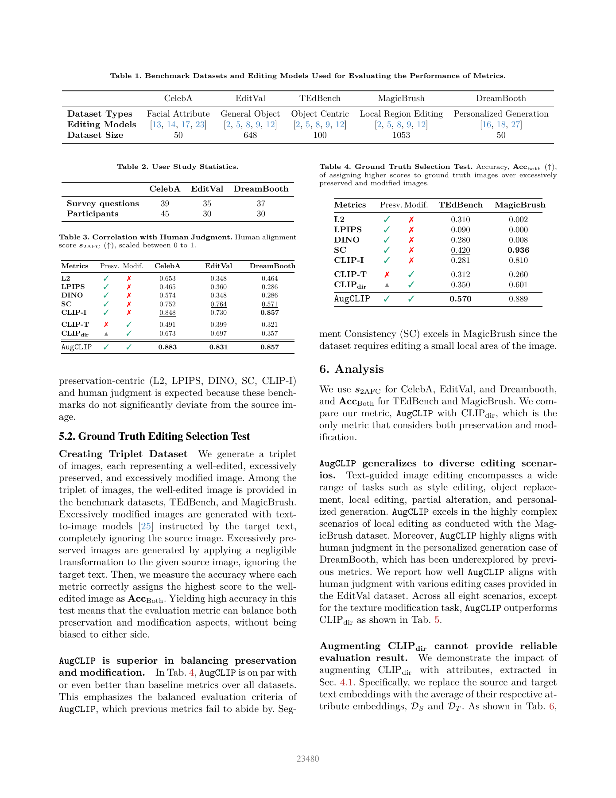
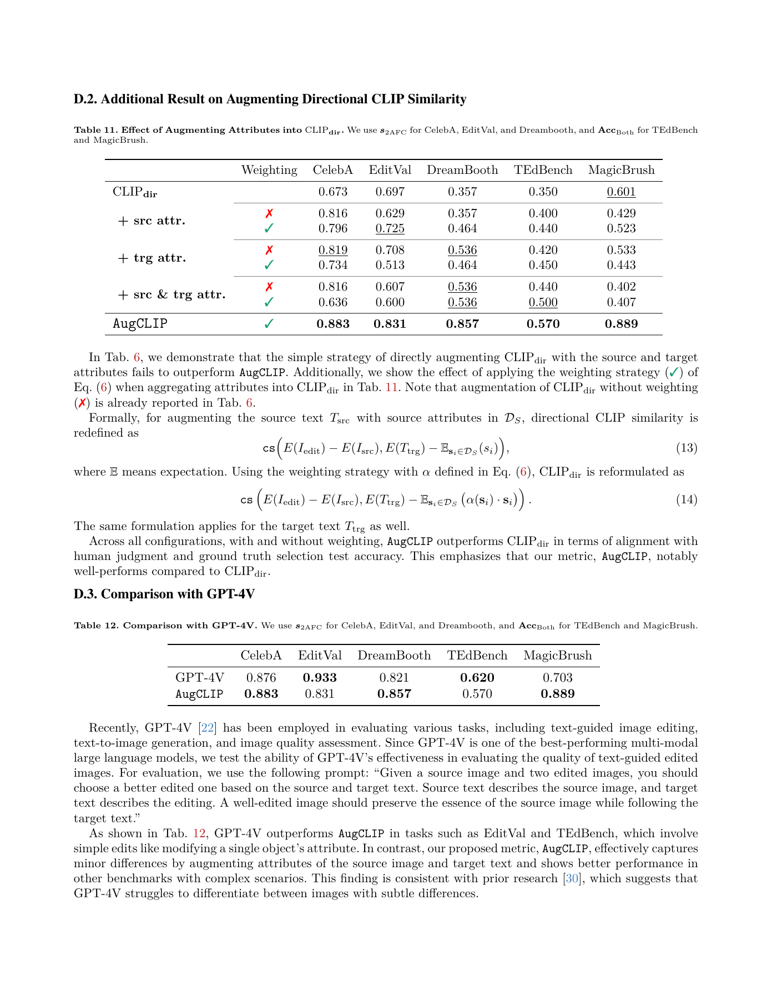

一句话结论
AugCLIP用源图与目标属性构造自适应的CLIP参考向量，改进部分编辑偏好排序；但人评先筛掉大量失败编辑，且强基线存在平手和反胜，不能把高分当作全面可靠的编辑成功判断。[2][3]
论文定位与问题定义
正式题名：Preserve or Modify? Context-Aware Evaluation for Balancing Preservation and Modification in Text-Guided Image Editing。DOI为10.1109/cvpr52734.2025.02186；arXiv2410.11374v3用于版本追踪，不作为正式出版资格的替代。[1]
这是编辑评测器而非编辑器。固定的CLIP-I/DINO容易奖励不修改，CLIP-T容易奖励不保留源图的重生成；方向性CLIP相似度（directional CLIP similarity）仍可能偏好过度修改。问题在于每条指令需要改变和保持的事实不同，不应统一套用相同权重。[2]
方法概述
- 描述层：GPT-4V从源图生成caption再拆为视觉属性，根据目标指令生成目标属性。[2][3]
- 表示与加权层：CLIP ViT-B/16编码属性；类内重要性与跨类冲突调节权重。[2]
- 实例分类层：每个源—目标上下文拟合加权线性SVM，分隔源/目标属性。[2]
- 评分层：将源图embedding向分类超平面作最小修改，以编辑图和修改后参考的余弦相似度评分；不生成真实参考图。[2]
“属性可分”不是“事实被保留”的证明；几何最小变化也不保证覆盖全部合法编辑。本文对这些假设提供特定基准上的支持，而非普适保证。
核心实验与关键发现
- 人类二选一一致性（s2AFC，表3）：CelebA/EditVal/DreamBooth为0.883/0.831/0.857；方向性CLIP为0.673/0.697/0.357。它是偏好一致分，不是相关系数；DreamBooth的CLIP-I同为0.857，属于平手。[2]
- 参考编辑选择准确率（AccBoth，表4）：TEdBench/MagicBrush为0.570/0.889，对方向性CLIP0.350/0.601有改善；但MagicBrush分割一致性（SC）为0.936，超过AugCLIP。[2]
- 更强裁判（补充表12）：GPT-4V在EditVal为0.933、TEdBench为0.620，超过AugCLIP0.831/0.570；在其余三集AugCLIP较高。不能略去这两个反胜列后宣称全面人类对齐。[3]
- 任务反例（表5）：纹理编辑AugCLIP0.742低于方向性CLIP0.806；颜色、动作两者均1.0，未给充分子类分母与不确定性。[2]
- 消融（表6–8、补充表9）：简单把属性加入方向性CLIP不足以重现结果；加权相对不加权在五集均提高。SVM的1.35%属性错分率是表示分类指标，不是图像编辑失败率。[2][3]


局限或疑问
人评不是全任务失败诊断
表1的50/648/100/1053/50是五集任务规模，不是人工验证规模。表2只在CelebA/EditVal/DreamBooth设置39/35/37题、45/30/30位参与者；题目总计111，但源图独立性、跨组参与者重复和完整投票覆盖不明。[2]
补充C.4先人工挑选有“足够变化”的编辑；C.5明确EditVal多数结果质量不足，只保留13类中的八类。因此分数条件化于预先筛选，不能证明它能拒绝未编辑、严重失败与复杂长尾。缺源图级区间、完整排除分母与充分一致性统计。[3]
AccBoth的负例是几乎不变和纯文生图两端，不能等同于真实细微副作用。MagicBrush虽源自多轮数据，本实验未按编辑链报告长期漂移；中文、专业图和独立污染审计亦未覆盖。[2][3]
公式、伪代码与公开demo不能混用
固定代码快照为28281486a7b5a8d044ae5505c02502f7fa0843d2。[4][5]
- 主文要求进入目标侧的严格不等式，投影公式却落在边界；已在目标侧的输入也未作零改动分支。合成标量检查确认形式边界，不说明真实数据影响大小。[2]
- 补充B把目标图特征写入分类分布，notebook却用目标文本；主文、伪代码与demo输入权限需要先统一。[2][3][4]
- notebook以点积替代投影后的余弦归一化。固定上下文的排序可能不变，但跨实例阈值、分数范围不等价。[4][5]
- cell9在赋值前引用
manip_image，循环内不重算tgt_img_feat；原cell最小桩执行得到NameError，AST确认循环缺特征更新。五类离线检查通过，未运行CLIP/CUDA、API或正式榜单，因此不指控论文实验使用了该demo。[4] - 正式文字用GPT-4V，demo用未锁日期的gpt-4o；权重归一化和分类器随机状态也需固定。[2][4][5]
成本和可复现边界
主文给属性生成12.3秒、评分0.15秒；约12.45秒是两项串行账面和，不是本轮测量。缓存可对同源同指令摊销，不能把热缓存评分时间当冷启动。硬件、峰值显存、P50/P95、API费用、失败重试与完整人工工时未充分披露。[2][3]
补充承认TEdBench上简单CLIP-I/CLIP-T组合有改善，故也不能把“固定组合常失效”写成永远失效。人类对颜色纹理和修改强度的偏好仍有案例差异。[3]
对当前Wiki判断的影响
与EditInspector成对阅读：候选间排序正确不等于完整检出副作用。前者改进上下文参考，后者暴露差异漏检；共同要求图像编辑研究入口A同时验证偏好、失败覆盖与局部保持。
下一步先冻结实现和裁判版本，再加入未编辑、整图重生成、轻微伪影、错误对象及合法替代编辑；不按成功输出过滤，按源图聚类报告区间，同时计入冷/热缓存和失败重试。这是研究建议，不是已完成实验。
原始链接与本地证据
官方页/PDF/补充/DOI/代码见页首；完整证据包位于raw/ingest/2026-09-22-augclip/，含独立analysis.md、两种全文抽取、代码快照、audit.py与audit-results.json。原始PDF和代码仅本地保存，公开页面只展示允许的原页预览。
Sources
[1] https://openaccess.thecvf.com/content/CVPR2025/html/Kim_Preserve_or_Modify_Context-Aware_Evaluation_for_Balancing_Preservation_and_Modification_CVPR_2025_paper.html
[2] https://openaccess.thecvf.com/content/CVPR2025/papers/Kim_Preserve_or_Modify_Context-Aware_Evaluation_for_Balancing_Preservation_and_Modification_CVPR_2025_paper.pdf
[3] https://openaccess.thecvf.com/content/CVPR2025/supplemental/Kim_Preserve_or_Modify_CVPR_2025_supplemental.pdf
[4] https://github.com/augclip/augclip_eval/blob/28281486a7b5a8d044ae5505c02502f7fa0843d2/eval_augclip.ipynb
[5] https://github.com/augclip/augclip_eval/blob/28281486a7b5a8d044ae5505c02502f7fa0843d2/evaluation/eval_base.py